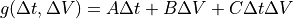

Drift¶
Script Type: WsfDriftManeuver
maneuver drift Common Maneuver Commands … drift_rate ... delta_time ... maximum_delta_time ... maximum_delta_v ... optimize_time ... optimize_delta_v ... optimize_cost ... tolerance ... end_maneuver
A drift maneuver will transfer the executing platform from an initial circular orbit to a final circular orbit with a relative drift rate. Because these two orbits do not intersect, the transfer is made via an intermediate orbit similar to those in targeting-class maneuvers (e.g., Rendezvous). As such, this maneuver also has options for specifying details of the transfer, allowing the user to set time or delta-V related constraints, and to specify optimization for time taken, or delta-V cost.
Note
Only the constraints relative_time, ascending_node, descending_node, eclipse_entry or eclipse_exit are supported for this maneuver.
- drift_rate <angle-rate-value>¶
Specify the rate of drift between the initial and final orbits.
- delta_time <time-value>¶
The desired time past the current time for execution of the maneuver. No Optimizations are performed.
Note
One of delta_time, maximum_delta_time or maximum_delta_v must be set. If maximum_delta_time is not set and maximum_delta_v is set, maximum_delta_time will be set to one orbital period of the target platform.
- maximum_delta_time <time-value>¶
The maximum time after the current time to be considered for execution of the maneuver. Optimizations in time will occur between the time of the constraint and the provided time.
- maximum_delta_v <speed-value>¶
The maximum delta_v to be considered for execution of the maneuver. Optimizations in time to find minimum delta-v will occur between the time of the constraint and any time limit set by maximum_delta_time.
Note
This value is constrained to be less than or equal to the delta-v specified in the maneuvering model.
- optimize_time¶
Optimize the targeting solution such that it executes at the earliest possible time. This optimization is also constrained by the maximum_delta_v value, if provided.
- optimize_delta_v¶
Optimize the targeting solution such that it executes at a time that minimizes total delta-v expended.
- optimize_cost <cost_type> …¶
Optimize the targeting solution such that the specified cost is minimized. The available cost functions are:
blended <A value> <B value> <C value>
This cost function depends on the transfer duration,
 , and the change in velocity, as follows:
, and the change in velocity, as follows:.
The values of
 ,
,  , and
, and  are provided as additional real arguments after the specification of the ‘blended’ cost.
are provided as additional real arguments after the specification of the ‘blended’ cost.
- tolerance <real-value>¶
Specify the solution search tolerance. The default tolerance is 1.0e-9.